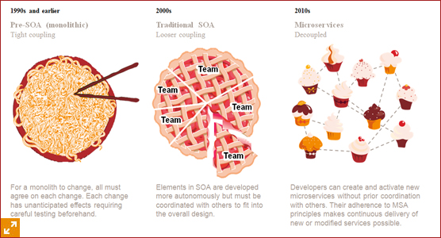

Micro services & Cloud Native Applications
A new approach


Monolith
All in one— One Ring to rule them all
- Authentication & Authorization
- Database interactions
- Business logic
- User front end
- etc
Monolith Drawbacks
-
Fear of change
- Redeploy everything
- Interrupt whole application
- Increase risk of failure
- Less updates & less evolution
- Testing is hard
-
Frustrated developer
- Tedious environment setup
- Overloaded IDE
- Heavy environment
- Hard to test
-
Hard to scale
- Enormous machines
- Hard to replicate
- Can't scale in parts
- Have to scale every piece

Microservices
Business oriented — Small, responsible, manageable, scalable pieces
- Faster development
- Faster deployment
- Fault isolation
- No long term framework
- Scale independently
- etc


Cloud-Native Applications
-
Benefits
- Cloud is a competitive advantage
- Flexibility
- Lets developers do their best work
- Align operations with the business
-
Keep in Mind
- Operations will be transformed in a cloud-native world
- Your workloads will need to be prioritized.
- Developers will need to code to a contract.
- You will need a platform; build or buy?
- You don’t have to go it alone.